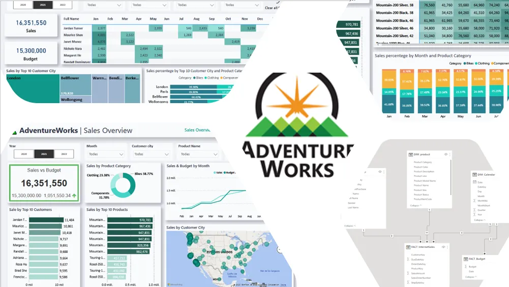

In this project, data have been collected and updated most latest one by using Query Language in SQL database. Transport to SQL to POWER BI by using Excel file transfering. In POWER BI, extraced data have been cleaned, transfromated into more useful for analysis. After Analysing Data, Sales trend, Pattern and Insights have been visulized into appropiate chart by using POWER BI. Finally, Review and Publish in Power BI service.


In this project, Data Exploration, Processing and Cleaning Stage have been done in SQL and Microsoft Excel depend on the data quantity.After that, the transformed data have been analysis and visualize findings into Dynamic and Aesthetic Dashboard upon brand guide line by using Tableau Visulaiztion
In this project, the yearly petrol and electric price have been extracted from thailand local website by using Python WebScrapping.After that, the collected data have been analysized and visualized upon comparing 2024-2025 Car Perfomanac data in POWER BI.
In this project, Global Covid data have been collected and imported in SQL Database for exploration, cleaning, transforming into useful findings. After that, TABLEAU have been used to visualized findings (like trends, patterns and Insights)
In this project, the movie coorelation analysis into visulatizatipn have been done in Python by using Seaborns and Matplotlib.
In this project, the process of web scraping data from Amazon website have been done in Pyhton. Also Upgrade automated data monitoring and alerting the user defined set point by emailing.
In this project, Python Coding have been used to extract the hostrical and latest currency data from the website which have been used to create the Currency Exchange Converter upon the various curreny and time.